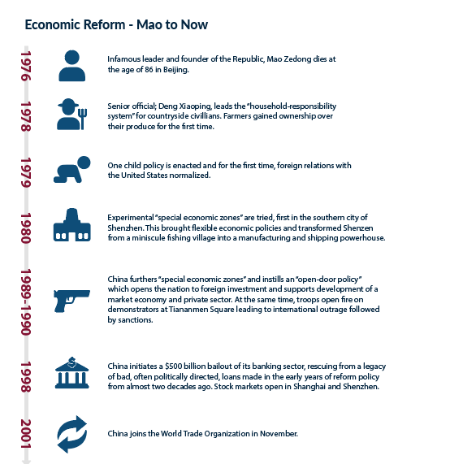
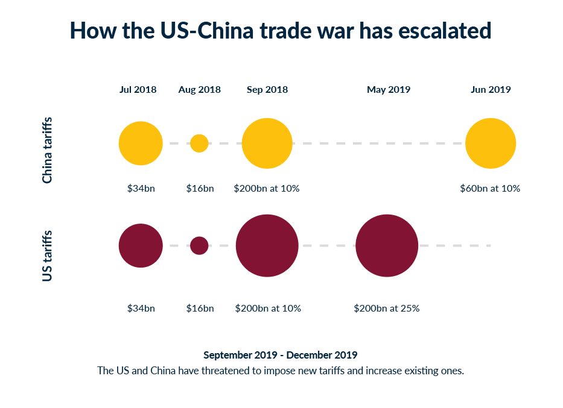
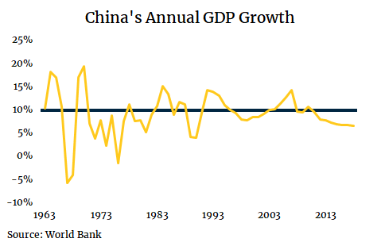
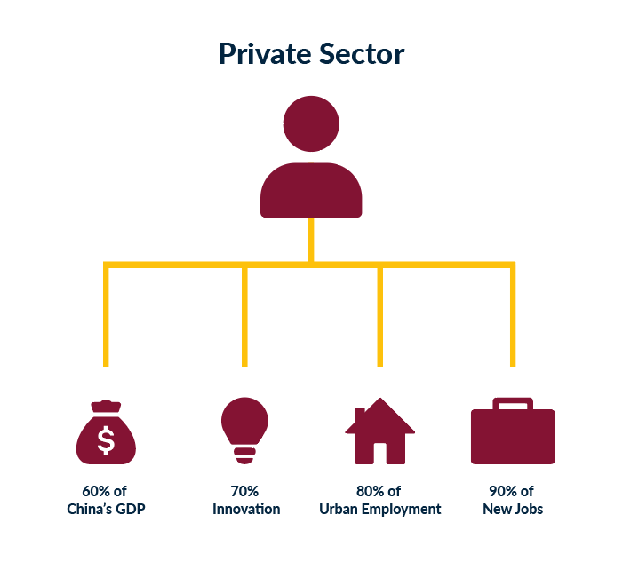
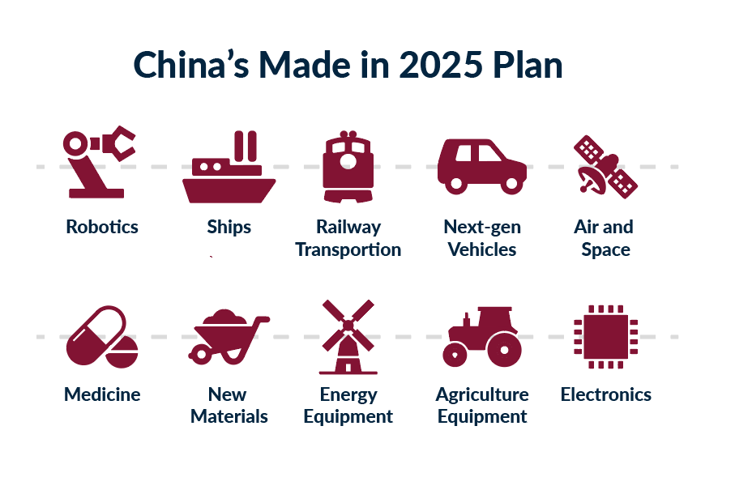
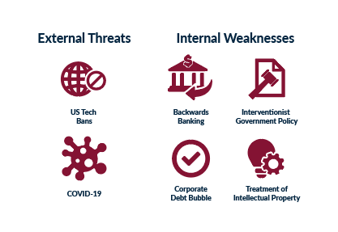

The Republic of China has enjoyed unprecedented advancements across industrial and economic sectors driven by double-digit fiscal growth for the better part of the past two decades. Recently, mounting concerns stemming from major governmental involvement in commercial activities, foreign policy affairs and halting growth have led to worries about the advancement of the country on its way to becoming a formidable superpower and the largest global economy. The republic has grown immensely through economic reform in the past generation, however, complex impediments in governance, debt and foreign relations yield concern for how the nation should move forward as it aims to become the largest world power. China should consider mending its approach to governance and control, and repair foreign relations in order to drive advancement in the future.
China’s Secret Sauce
Three primary factors are believed to have contributed to China's dominance as an economic force: a large influx of capital investments, and a rapid increase in the nation’s total factor productivity. (forbes)
Starting in 1953, under the regime of Chairman Mao Zedong, the Chinese government has been pushing "Five-Year Plans", a series of five-year national development agendas focused on economic development. (1421) The ultimate aim of these sweeping reforms was to improve the position and prowess of the nation as a whole on the global stage.
China has developed and come a long way from its historic position in the global economy. With China’s strong foothold in manufacturing as the “world’s factory”, and the further runway available due to its heavy emphasis on education and R&D, China is poised to soon become the largest economy in the world. However, due to poor foreign relations with other world powers, namely the United States, China needs to combat such impediments to grow in the present if it wants to remain en route to becoming the largest global economy.
Communist Party of China’s Interventionist Approach to Commerce and the Resulting US Tech Ban
China has developed a reputation for questionable involvement in the operations of its companies. As a result, many Chinese entities have found it difficult to gain market share outside of the country. Foreign suspicion of China has not only resulted in disruptions to individual corporations however, but has spread to impede entire industries, with the ultimate effect of inhibiting China’s growth.
When Xi Jinping succeeded as President in 2012, he emphasized the importance of the central planning, marking an notable shift in Chinese policy. (guardian) First, the Communist Party systematically infiltrated private companies by mandating that every company with greater than 50 employees have a representative, a requirement which radically constrained competitive behaviour and diluted any incentives that drove innovation or business ownership. (hbr)
Shortly afterward in 2017, a national intelligence law was introduced stating that “any organisation and citizen” should “support and cooperate in national intelligence work”. Furthermore, executives such as Jack Ma of Alibaba and Ren Zhengfei of Huawei are members of the Communist Party of China (CPC), a fact which has not helped the cases of these mega-companies. This set the foundation for the most recent impediment to China's growth: the US tech ban and eventual trade war. (guardian)
It came as no surprise, therefore, when in May 2019, the US Commerce Department placed Huawei and 70 of its affiliates on its “Entity List,” a trade blacklist barring anyone on it from accessing US supply chains without government approval. (vox) In essence, through pervasive party involvement in companies, and the 2017 National Intelligence Law, China essentially gifted the US and EU an excuse to limit Chinese access to their markets, technology and companies. (guardian) Countries including Australia, Canada, and Japan have also expressed concerns about the use of Huawei's 5G technology services, and have taken measures against the company’s involvement in the development of national communication infrastructure. (bbc)
These developments would likely not have occurred if not for the CPC’s interventionist policies, and may continue to harmfully affect industries beyond technology if reparative action is not taken.
Intellectual Property
With the growing advent of technology and globalization, economies and private entities are growing on the backs of technology and proprietary intellectual property. Through its mandatory “technology transfers,” China has had a history of stealing intellectual property, a fact that has cemented its current and past historic growth rates. However, China may face an uphill battle in attracting foreign investments in the future as a result of this stringent mandate.
In the past, if a prospective foreign corporation or firm wanted to expand into the Chinese market, forced “technology transfers” were mandatory, where Chinese partners would gain access to both sensitive and proprietary information. China was allegedly able to place such high demands on foreigners by using its vast market and Chinese consumer demographic as leverage and rationale. For example, in 2009, Japan’s Kawasaki Heavy Industries built a high-speed railroad system in China. After the Chinese government pushed the Japanese to teach their technical skills to Chinese engineers, Chinese companies were soon using the same technologies to land railway projects across the globe. (forbes)
Furthermore, the most recent imposition of tariffs by the United States on Chinese imports were justified by President Donald Trump as justice for the alleged theft of American intellectual property (IP). In fact, a 2017 report commissioned by the National Bureau of Asian Research estimated “that the annual cost to the U.S. economy continues to exceed $225 billion in counterfeit goods, pirated software, and theft of trade secrets and could be as high as $600 billion.”
Fortunately, China has committed to a gradual reduction in such requirements. A first step has been by allowing foreign companies to retain majority ownership allowing increased market access without technology transfers.
Intellectual property, therefore, is a source of significant contention for China, and should be a fundamental consideration for the nation in future covenant discussions in bilateral trade relations between the US, and other global economies.
Debt Bubble
In order to stimulate economic growth, the CPC has extended numerous treatments towards state-owned enterprises (SOEs) unavailable to privately-held corporations, the most notable of which has been preferential access to loans. (nypost) Unfortunately, SOEs are now dangerously over-leveraged, structurally inefficient, and would likely collapse without the biases provided by the government. (wef) Concerns do not just end with Chinese corporations, however. Many countries in the East and Asian corridors have their economies intertwined with China’s, and an increasingly prevalent trend of corporate bankruptcies could spell a domino-shaped disaster for the global economy at large.
For example, after the 2008 financial crisis, state-owned banks vowed to stimulate the economy. The benefactors and recipients of such funds were primarily developers and construction companies who believed infrastructure development would grow the economy through jobs and increased government revenues. While true in theory, this reform created the problem of “ghost-towns”. This phenomenon all across China consists of large urban developments that remain empty due to a lack of influence for citizens to move to such regions. The primary concern is that these empty and non-cash generating units are financed by debt to support economic prosperity, but instead serve to undermine financial institutions, and pose the risk of disability to the Chinese economy.
Of anywhere in the world, Chinese corporations have the highest proportion of debt to GDP in the world. In 2008, Chinese debt to GDP stood at 141%. By 2018, though, this same figure had ballooned to more than 280%. Traditional economic cycles suggest such patterns in debt levels inevitably lead to recessions and economic regression.
Furthermore, China’s almost $30 trillion of corporate debt is of concern as China has become a large trade market and destination. China alone has the greatest amount of corporate bonds in the world, but recently, more Chinese corporations have resorted to bond issuances to aid in principal loan payments. By the end of Q1 in 2019, nine major companies defaulted on bonds issued. In March 2017, Huishan Dairy listed on the Hong Kong Stock Exchange was unable to meet scheduled loan payments. Within 30 days, the company had witnessed almost $5 billion wiped from their market capitalization, proving to be worrisome for investors.
For the better part of 40 years, China has remarkably averaged near double-digit economic growth. As a result, China has been able to maintain payments to its debt obligations. In light of new de-leveraging policies to control debt levels, if China is unable to maintain historical levels of growth, any sudden changes within China and the global economy will make it difficult for China’s companies to keep up with debt obligations. Such a problem could wreak havoc on global financial institutions and markets.
Backwards Banking
The aforementioned debt crisis grew largely as a result of China's shadow banking industry, a group of unregulated financial intermediaries such as lenders and brokers who created credit across financial systems without regulatory oversight.
Much like the United States 2008 mortgage crisis, China experienced a similar housing and financial crisis in 2008 in part due to shadow banking. Now, shadow banking accounts for at least 60% of the total Chinese GDP with sources claiming as much as 87%. In global monetary policy, it is common to see fluctuations amongst interest rates. Often, interest rates are increased to combat rising inflation. As many corporations funded rely on credit in the form of loans, and increasingly more entities demonstrate their inability to maintain interest payments, sudden increases in rates will lead to inevitable defaults on loans and bonds. This represents an increasingly concerned issue for Beijing, and one that could potentially lead to an economic fallout.
Fortunately, in recent times, more stringent agencies and oversight bodies have been created to deter shadow banking. Continued regulation of China's shadow banking system represents a necessary bulwark, and one that should be carefully overseen. Otherwise, any drastic monetary changes could lead to the collapse of the Chinese economy, which would require bailouts and stimulus.
COVID-19
More recently, these pervasive structural weaknesses have only been magnified with the recent outbreak of COVID-19, an infectious disease that is a part of a larger family of viruses, known as Coronaviruses. The virus was reported to have originated from Wuhan, China, where on December 31st, 2019 a cluster of pneumonia cases was reported. There are now almost two million global cases with nearly 110,000 deaths.
Without a vaccine for the virus, containment around the world has been difficult and grievous. Until now, much of the treatment available has been supportive in nature and has been based on the kind of care offered to patients with influenza and other respiratory illnesses. (livescience) According to Annelies Wilder-Smith, professor of emerging infectious diseases at the London School of Hygiene and Tropical Medicine, the general consensus is that it will take at least 18 months before a vaccine can be deployed to the public. (guardian)
For China, as Q1 wraps up for 2020, this will very well be the first time since 1976 the country will be experiencing a shrinking economy. China’s after-effects are still unknown but could be stark considering the sheer market size and role of China in global trade, business and finance.
Potential Pathway Forward: Corporate Privatization
The obstacles to China’s economic growth are complex and ever-changing. From systemic weaknesses arising from interventionist policy to the external threat of technology boycotts, to the ongoing tragedy of the Global Coronavirus Recession, there is no simple solution. However, one presents itself as a movement in the right direction: corporate privatization.
In the past, SOEs were incredibly successful in their contribution to government-backed goals, and have been pivotal in the emergence of megacities such as Shenzhen. However, in recent times, China's private sector is expected to play an ever more important role as a driver of economic growth. "60/70/80/90" is often used to describe the private sector's role in the Chinese economy. That is, they contribute to 60% of China’s GDP, are responsible for 70% of innovation, 80% of urban employment and provide 90% of new jobs. (wef) As such, China’s support of private corporations may be in their best interest.
Furthermore, the EU, United States, Australia, Canada, and Japan all cited two main factors as the basis for their technology boycotts: China’s 2017 National Intelligence Law, and the heavy party representation in Chinese corporations. (guardian) Reduced intervention in commercial activities may represent a path for China to re-instill the trust that was once lost.
Similarly, the dangerous levels of corporate leverage arise largely from the Chinese government’s preferential extension of loans to state-owned enterprises (SOEs) over privately-held corporations. (nypost) Under a trend of privatization, the use of state funds as a “line of credit” will become less commonplace, and would further contribute to strengthened structural efficiency. (wef)
However, in light of numerous ongoing issues including the US-China trade war, and the Global Coronavirus Recession, such a goal may prove to do more harm than good. At this stage, privatization could result in major disruption, potential layoffs and defaults, and mismanagement by new private owners. (wef) As such, in order to respond more effectively to looming economic threats, the Communist Party of China should, in fact, prioritize security over efficiency. In the long-term however, recognizing the limited efficiency businesses have within a centralized economic system, the CPC should continue facilitating the increased efficiency of SOEs, and gradually develop a framework for privatization to ensure long-term economic growth.
China’s Future
Since the institution of the first "Five-Year Plan" in 1953, China has experienced massive amounts of economic growth. However, factors which have historically driven China’s boom, namely state involvement in commerce and debt financing, no longer play the same role that they once did. In fact, these drivers have been utilized to the point of failure, such that the positive benefits derived have reached an inflection point. With a new decade dawning, perhaps it is time for China to adopt a new growth strategy: one where corporations and individuals alike have increased agency and autonomy.
Bibliography
- 1Abrami, R. M., Kirby, W. C., & McFarlan, F. W. (2014, August 14). Why China Can't Innovate. Retrieved April 19, 2020, from https://hbr.org/2014/03/why-china-cant-innovate
- 2Al Jazeera. (2020, February 13). Alibaba: Coronavirus is having a broad impact on China's economy. Retrieved April 19, 2020, from https://www.aljazeera.com/ajimpact/alibaba-coronavirus-broad-impact-china-economy-200213204347210.html
- 3Amadeo, K. (2019, December 18). It's Good That China's Growth Is Slowing. Really. Retrieved April 19, 2020, from https://www.thebalance.com/china-s-economic-growth-cause-pros-cons-future-3305478
- 4BBC News. (2019, July 29). China profile - Timeline. Retrieved April 19, 2020, from https://www.bbc.com/news/world-asia-pacific-13017882
- 5BBC News. (2020, January 21). Meng Wanzhou case: Huawei executive's extradition hearings begin. Retrieved April 19, 2020, from https://www.bbc.com/news/world-us-canada-51181831
- 6Bloomberg News. (2018, June 7). A Guide to China's $10 Trillion Shadow-Banking Maze. Retrieved April 19, 2020, from https://www.bloomberg.com/news/articles/2018-06-07/a-guide-to-china-s-10-trillion-shadow-banking-maze-quicktake
- 7Brown, T. (2019, November 25). Five things to know about China's promised crackdown on intellectual-property theft. Retrieved April 19, 2020, from https://www.marketwatch.com/story/five-things-to-know-about-chinas-promised-crackdown-on-intellectual-property-theft-2019-11-25
- 8Cai, J. (2019, June 3). China's push for self-reliance meets reality of global trade networks. Retrieved April 19, 2020, from https://www.scmp.com/news/china/diplomacy/article/3012888/chinas-push-self-reliance-meets-reality-global-trade-networks
- 9Chan, T. F. (2018, March 20). Xi Jinping declares China will 'fight the bloody battle' in hardline speech on Taiwan and Hong Kong. Retrieved April 19, 2020, from https://www.businessinsider.com/xi-jinping-national-peoples-congress-closing-speech-2018-3
- 10Chatzky, A. (2020, February 12). Huawei: China's Controversial Tech Giant. Retrieved April 19, 2020, from https://www.cfr.org/backgrounder/huawei-chinas-controversial-tech-giant
- 11Cheng, E. (2019, January 28). China can no longer rely on real estate for growth. It's now turning to railways and more debt. Retrieved April 19, 2020, from https://www.cnbc.com/2019/01/25/china-can-no-longer-rely-on-real-estate-for-growth.html
- 12China GDP growth (annual %). (n.d.). Retrieved April 20, 2020, from https://data.worldbank.org/indicator/NY.GDP.MKTP.KD.ZG?end
- 13China's push for self-reliance meets reality of global trade networks. (2019, June 3). Retrieved April 19, 2020, from https://www.scmp.com/news/china/diplomacy/article/3012888/chinas-push-self-reliance-meets-reality-global-trade-networks
- 14Cilluffo, F. J., & Cardash, S. L. (2019, August 27). What's wrong with Huawei, and why are countries banning the Chinese telecommunications firm? Retrieved April 19, 2020, from http://theconversation.com/whats-wrong-with-huawei-and-why-are-countries-banning-the-chinese-telecommunications-firm-109036
- 15Clark, G. (2018, December 4). What's Intellectual Property and Does China Steal It?: QuickTake. Retrieved April 19, 2020, from https://www.bloomberg.com/news/articles/2018-12-05/what-s-intellectual-property-and-does-china-steal-it-quicktake
- 16Craven, M., Mysore, M., Singhal, S., & Wilson, M. (2020, April). COVID-19: Implications for business. Retrieved April 19, 2020, from https://www.mckinsey.com/business-functions/risk/our-insights/covid-19-implications-for-business
- 17Diplomat, T., 2020. Understanding China’S Technological Rise. [online] Thediplomat.com. Available at: https://thediplomat.com/2018/08/understanding-chinas-technological-rise [Accessed 19 April 2020].
- 18Eastern Ontario. (n.d.). What is COVID-19?: EOHU: Public Health. Retrieved April 19, 2020, from https://eohu.ca/en/my-health/what-is-covid-19
- 19Evans, P. (2018, December 10). Canada is caught in the middle of a China-U.S. tech war. Retrieved April 19, 2020, from https://www.theglobeandmail.com/opinion/article-america-is-already-at-war-with-china-can-canada-really-remain-neutral/
- 20Fortune Editors. (2014, July 31). What makes China telecom Huawei so scary? Retrieved April 19, 2020, from https://fortune.com/2011/07/28/what-makes-china-telecom-huawei-so-scary/
- 21Guilford, G. (2019, June 10). China's debt disease might wreck its uncrashable housing market. Retrieved April 19, 2020, from https://qz.com/1615596/chinas-debt-disease-is-infecting-its-housing-market/
- 22Guluzade, A., & Ahmadoff & Co. (n.d.). Explained, the role of China's state-owned companies. Retrieved April 19, 2020, from https://www.weforum.org/agenda/2019/05/why-chinas-state-owned-companies-still-have-a-key-role-to-play/
- 23Hamilton, I. A. (2019, July 8). Researchers studied 25,000 leaked Huawei resumes and found troubling links to the government and spies. Retrieved April 19, 2020, from https://www.businessinsider.com/huawei-study-finds-connections-between-staff-and-chinese-intelligence-2019-7
- 24Hard, R., & Dougherty, S. (n.d.). China's economy: A remarkable transformation. Retrieved April 19, 2020, from https://oecdobserver.org/news/archivestory.php/aid/1685/China_92s_economy:_A_remarkable_transformation.html
- 25Heeb, G. (2019, February 6). China's hopes of becoming the world's largest economy are hitting a major roadblock | Markets Insider. Retrieved April 19, 2020, from https://markets.businessinsider.com/news/stocks/chinas-hope-to-become-worlds-largest-economy-hitting-major-roadblock-2019-2-1027931209
- 26Hu, Z., 2020. Economic Issues 8 -- Why Is China Growing So Fast?. [online] Imf.org. Available at: https://www.imf.org/external/pubs/ft/issues8/index.htm [Accessed 19 April 2020].
- 27Huifeng, H., 2020. Why China Can’T Innovate. [online] Harvard Business Review. Available at: https://hbr.org/2014/03/why-china-cant-innovate [Accessed 19 April 2020].
- 28Inman, P. (2020, February 10). Will the coronavirus outbreak derail the global economy? Retrieved April 19, 2020, from https://www.theguardian.com/news/2020/feb/10/will-the-coronavirus-outbreak-derail-the-global-economy
- 29Just Landed. 2020. Chinese Mentality. [online] Available at: https://www.justlanded.com/english/China/Articles/Culture/Chinese-mentality [Accessed 19 April 2020].
- 30Keane, S. (2020, April 17). Huawei ban: Full timeline as it warns against disrupting its role in Britain's 5G rollout. Retrieved April 19, 2020, from https://www.cnet.com/news/huawei-ban-full-timeline-us-government-backdoor-access-mobile-networks-china-trump-ban-security-threat-mate-x/
- 31Li, Y. (2018, August 3). Understanding China's Technological Rise. Retrieved April 19, 2020, from https://thediplomat.com/2018/08/understanding-chinas-technological-rise/
- 32McGregor, R. (2019, July 25). How the state runs business in China. Retrieved April 19, 2020, from https://www.theguardian.com/world/2019/jul/25/china-business-xi-jinping-communist-party-state-private-enterprise-huawei
- 33McGregor, R. (2019, July 25). How the state runs business in China. Retrieved April 19, 2020, from https://www.theguardian.com/world/2019/jul/25/china-business-xi-jinping-communist-party-state-private-enterprise-huawei
- 34Meng Wanzhou case: Huawei executive's extradition hearings begin. (2020, January 21). Retrieved from https://www.bbc.com/news/world-us-canada-51181831
- 35Mosher, S. W. (2019, January 21). How communism is dooming China's economy. Retrieved from https://nypost.com/2019/01/19/how-communism-is-dooming-chinas-economy/
- 36O'Flaherty, K. (2019, February 27). Huawei Security Scandal: Everything You Need to Know. Retrieved April 19, 2020, from https://www.forbes.com/sites/kateoflahertyuk/2019/02/26/huawei-security-scandal-everything-you-need-to-know/
- 37Otero, D. (2014, April 17). Chinese mentality. Retrieved April 19, 2020, from https://www.justlanded.com/english/China/Articles/Culture/Chinese-mentality
- 38Pappas, S. (2020, March 14). Is there a cure for the new coronavirus? Retrieved from https://www.livescience.com/can-coronavirus-be-cured.html
- 39Pham, P. (2018, March 6). Is There A Secret Growth Hormone Added To China's Economy? Retrieved from https://www.forbes.com/sites/peterpham/2018/03/06/is-there-a-secret-growth-hormone-added-to-chinas-economy/
- 40Pham, P. (2018, March 6). Is There A Secret Growth Hormone Added To China's Economy? Retrieved April 19, 2020, from https://www.forbes.com/sites/peterpham/2018/03/06/is-there-a-secret-growth-hormone-added-to-chinas-economy/#7ccd52ef3f13
- 41PronkMichael, M. (2020, March 5). China's Five-Year Plans: Predictions. Retrieved April 19, 2020, from https://www.1421.consulting/2019/07/chinas-five-year-plans/
- 42Rosenbaum, E. (2019, March 1). 1 in 5 corporations say China has stolen their IP within the last year: CNBC CFO survey. Retrieved April 19, 2020, from https://www.cnbc.com/2019/02/28/1-in-5-companies-say-china-stole-their-ip-within-the-last-year-cnbc.html
- 43Sharma, S. (2019, August 26). China's enormous debt 'no longer can be ignored,' analyst says. Retrieved April 19, 2020, from https://www.cnbc.com/2019/08/23/chinas-debt-levels-amid-its-slowing-economy.html
- 44Spinney, L. (2020, April 6). When will a coronavirus vaccine be ready? Retrieved from https://www.theguardian.com/world/2020/apr/06/when-will-coronavirus-vaccine-be-ready
- 45Stewart, E. (2019, August 19). The US government’s battle with Chinese telecom giant Huawei, explained. Retrieved April 19, 2020, from https://www.vox.com/technology/2018/12/11/18134440/huawei-executive-order-entity-list-china-trump/
- 46Swanson, A., & Mccabe, D. (2020, February 16). Trump Effort to Keep U.S. Tech Out of China Alarms American Firms. Retrieved April 19, 2020, from https://www.nytimes.com/2020/02/16/business/economy/us-china-technology.html
- 47Trading Economics. (n.d.). China GDP Annual Growth Rate. Retrieved April 19, 2020, from https://tradingeconomics.com/china/gdp-growth-annual
- 48World Health Organization. (n.d.). Coronavirus. Retrieved April 19, 2020, from https://www.who.int/health-topics/coronavirus#tab=tab_1